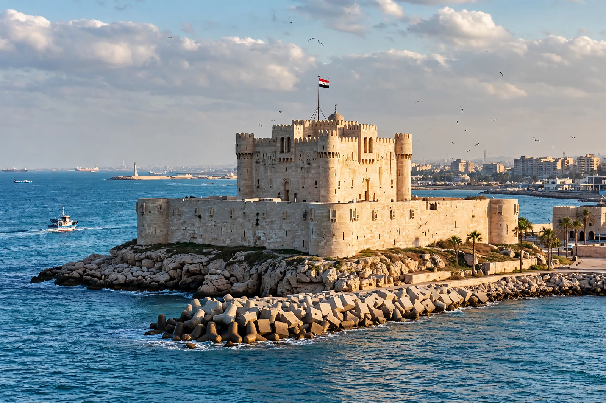

The Citadel of Qaitbey (or Qaitbay; Arabic: قلعة قايتباي) is a fifteenth-century defensive fortress on the Mediterranean coast at Alexandria, Egypt. It was built by the Mamluk Sultan al-Ashraf Sayf al-Din Qa'it Bay between 1477 and 1479 on the island of Pharos, at the eastern harbour's entrance, on — and partly from — the ruins of the Lighthouse of Alexandria, one of the Seven Wonders of the Ancient World. The citadel guarded Alexandria's harbour for centuries and is today one of the city's most visited monuments, housing a naval museum.
| Citadel of Qaitbey | |
| Location | Eastern Harbour, Alexandria, Egypt |
|---|---|
| Built | 1477–1479 |
| Builder | Sultan al-Ashraf Qaitbey (Mamluk Sultanate) |
| Materials | Limestone, including blocks reused from the Pharos lighthouse |
| Current use | Museum (Egyptian Naval Museum) and monument |

The citadel stands on the site of the ancient Pharos lighthouse at the entrance to Alexandria's eastern harbour.
The Pharos lighthouse, built under the Ptolemies in the third century BC, was progressively ruined by earthquakes — notably those of 956, 1303 and 1323 — until it collapsed entirely. In 1477 Sultan Qaitbey, the last great builder-sultan of Mamluk Egypt, visited Alexandria and ordered a fortress built on the site to defend Egypt's principal Mediterranean port against the growing Ottoman threat. The fort, completed in about two years, incorporated massive reddish granite blocks and columns from the fallen lighthouse in its walls and foundations; some of these ancient stones are still visible. Qaitbey endowed it with a mosque and a garrison, and successors including Sultan Qansuh al-Ghawri strengthened its armament.
The citadel passed with Egypt to the Ottomans after 1517 and was garrisoned by Janissaries. During the French occupation of Egypt, Napoleon's forces took Alexandria in 1798 and found the ageing fortress of little military value. Muhammad Ali Pasha renovated the fort in the nineteenth century and re-armed it with modern cannon. Its last military action came in 1882, when British warships bombarded Alexandria's forts during the Anglo-Egyptian War, damaging the citadel. Restorations in the twentieth century and again in the 2020s repaired the damage.
The fortress is a roughly square stone enclosure with towers at its corners, surrounded by sea on three sides. Its centrepiece is a three-storey square keep in mature Mamluk military style, with machicolations, arrow slits and a small mosque on the first floor — notable as the oldest surviving mosque within a citadel in Egypt. The walls, built to withstand early artillery, enclose courtyards and barracks; the main gate bears Qaitbey's blazon. Architecturally it belongs to the same late-Mamluk world that exported its vocabulary eastward, just as Timurid architecture was transforming Central Asia in the same decades.
The citadel anchors the eastern end of Alexandria's Corniche and houses the Egyptian Naval Museum, with models and artefacts from Pharaonic to modern naval history. The waters around it are an archaeological site: divers since the 1990s have mapped thousands of submerged blocks, sphinxes and columns from the Pharos and the Ptolemaic royal quarter on the harbour floor.